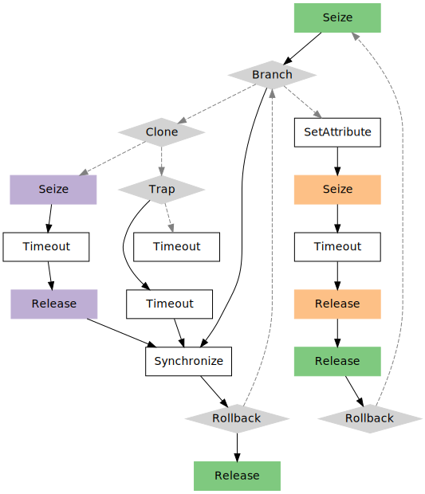

vignettes/plot.trajectory.Rmd
plot.trajectory.RmdSimulation trajectories may grow considerably, and they are not always easy to inspect to ensure their compliance with the model that we are trying to build. For instance, let us consider this pretty complex one:
library(simmer) t0 <- trajectory() %>% seize("res0", 1) %>% branch(function() 1, c(TRUE, FALSE), trajectory() %>% clone(2, trajectory() %>% seize("res1", 1) %>% timeout(1) %>% release("res1", 1), trajectory() %>% trap("signal", handler=trajectory() %>% timeout(1)) %>% timeout(1)), trajectory() %>% set_attribute("dummy", 1) %>% seize("res2", function() 1) %>% timeout(function() rnorm(1, 20)) %>% release("res2", function() 1) %>% release("res0", 1) %>% rollback(11)) %>% synchronize() %>% rollback(2) %>% release("res0", 1)
We must ensure that:
For this task, the simmer.plot package provides an S3 method for the plot generic to visualise diagrams of trajectory objects (see ?plot.trajectory for more details) using the DiagrammeR package as the backend, which facilitates trajectory checking and debugging.
Note that colors are assigned to seizes and releases as a function of the resource that these are applied to. By default, resources are mapped to a qualitative Color Brewer palette, but you can override this using the optional parameter fill.
library(simmer.plot) get_palette <- scales::brewer_pal(type = "qual", palette = 1) plot(t0, fill = get_palette)
